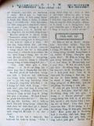
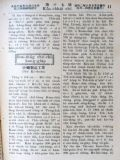
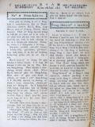
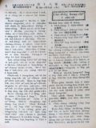

Languages
台文
｜
中文
｜
日本語
｜
English
字體
小
｜
中
｜
大
首頁
/
白話字數位典藏
白話字數位典藏全文檢索
查詢模式
選擇年代
清國時代(1885-1895)
日本時代(1895-1945)
戰後(1945-1969)
1885-1895
1896-1905
1906-1915
1916-1925
1926-1935
1936-1945
1946-1955
1956-1965
1966-1969
1970-1980
1980-1990
1990-2000
2000-2010
2010-
選擇文類
詩
散文
小說
戲劇
傳記
選擇作者
陳清忠
陳清義
編輯部
柯設偕
吳天命
明有德
偕叡廉
周天來
劉華義
王守勇
林茂生
陳添旺
柯維思
王占魁
賴仁聲
陳瓊琚
雪峰逸嵐
吳清鎰
郭水龍
蕭樂善
許水露
葉金木
陳金然
章王由
廖得
鄭連坤
潘道榮
楊士養
梁秀德
劉約翰
周淑慧
高金聲
林燕臣
黃六點
蔡愛義
許有才
主筆
巴克禮
郭朝成
陳鳩水
張基全
陳明清
陳能通
拾穗生
顏振聲
卓恆利
傳道局
胡文池
劉主安
鄭兒玉
楊將、劉天來
謝良輝
Google Search
Yahoo Search
全部
刊名
標題
標題(教羅)
全文
全文(教羅)
作者
第121頁，共141頁(共2,805筆資料) 0.64570188522339sec
1
...
119
120
121
122
123
...
141
To Page
GO
文字列表
圖文列表
排序
日期
文類
刊名
作者
影像

[1927-6 芥菜子 文類-散文 作者-偕叡廉/Kai Jōe-liâm]
(3)
活活埋 [ oa̍h-oa̍h tâi ]
活活埋 Nî牧師去佇印度傳教濟濟年久。轉去英國的時，一位朋友對伊講，Nî牧師你佇印度的時常常拄著風險的事，請你講淡薄分阮聽。Nî牧師講，好，我講淡薄。我佇印度的時，捌踮佇喜馬拉山的山跤。佇彼所在有不止濟西藏人帶物來táu換，因為西藏是印度的隔壁國。我也學淡薄西藏的土音，後來紲會曉傳道理予in遮的人聽。遮个人平素是佛教，不止對重西藏的活佛。 有一日我tú-teh傳道理的時，忽然聽見一个西藏人teh叫我。伊講伊的老爸破病真傷重teh欲死，愛我緊去安慰伊，紲傳主的福音予in聽。我就佮伊做陣去。佇路中有4个西藏人也佮我做陣行。到阮入佇西藏國的地界，這幾人隨時出手共我掠，紲用索仔縛我。後來拖我...
[1927-6 芥菜子 文類-散文 作者-陳瓊琚/Tân Khêng-ku]
(3)
論佇家庭中祈禱的力 [ Lūn tī Ka-têng-tiong Kî-tó ê La̍t ]
論佇家庭中祈禱的力 論做老母的人彼个責任實在是真大。所以若無得著上主的幫贊，的確無向望會成就做老母彼个重大的使命。上帝佇耶利米33：3，有應允講，「你求我，我的確應，指示你本事，神的奧妙袂測度，恁未捌聽見」。所以親像teh指揮大家族的老母，有時的確有彼款盡oh得辨理的家內事，所以做老母的人的確著欠用料理家內，得當的才情。因為有時著用智識、吞忍、疼痛佮同情等等，就是照彼時彼時所著欠用的法度，因為有是定著會拄著真oh得設法的所在。親像佇這款oh設法的時陣，老母心肝著清靜，也著謹慎本身的舉止行動，閣著不時用對主來祈禱，因為伊是gâu體貼軟弱的，gâu幫贊人的，閣是gâu 慰安佮gâu賞賜智識予人...
[1927-6 芥菜子 文類-散文 作者-雪峰逸嵐/Soat-hong Iat-lâm]
(3)
兒童欄上帝的guâ [ 兒童欄 Siōng-tè ê gâu ]
兒童欄 上帝的 gâu。 (雪峰逸嵐) 通疼的囡仔兄、囡仔姊。我佇舊年11月第 10號，有佮恁講一項事，恁會記得袂？若袂記得，著hian第 10號的 「芥菜子」就連鞭會想著，就是智識的源頭，我有講欲閣講予恁聽因為有濟濟代誌，也去廈門，閣過來猶原未有時間通kia̍h筆，總是真掛心，對恁真失禮，今無要緊，請赦免，chím-moá欲閣佮恁講lah。 今欲佮恁講啥物？請你拜託恁阿娘，恁阿姊讀15號的本報。「造化的奧妙」予恁聽，紲解說較淺較明，恁才聽會曉，(也請有心佇兒童宗教教育的爸母，歡喜佮恁的囝兒談論)。 囡仔兄、囡仔姊。恁信mah？敢有影萬物是上帝創造--的？有人講，萬物是盤古 kia...
[1927-6 芥菜子 文類-散文 作者-明有德/Bêng Iú-tek]
(2)
聖哉。聖哉。聖哉！ [ Sèng-chài. Sèng-chài. Sèng-chài! ]
聖哉。聖哉。聖哉！ 這首詩是R.Heber所作的。伊是英國人，出世佇1783，卒業牛津(Oxfort)大學。伊做囡仔的時真gâu做詩。伊做詩到一世人。伊所做的較常是聖詩。伊佇英國的一所在做牧師16年久。做牧師的時伊真欣慕愛去印度。佇英國的時，伊不時看印度的地圖，想愛蹛遐通四界看遐的人的狀況。40 歲的時伊有受一个kam-tok牧師的命令，去印度的 Calcutta做遐的 kam-tok。3年久伊不時出外探教會。伊真熱心做主的工。有一日伊做工真thiám，轉去厝ni̍h 的時入去浴間洗身軀，一點鐘後，一个朋友來揣伊，總是看伊已經佇浴間內過往。 佇咱的聖詩的中間，兩三首是伊所做--的。這...

[1927-6 芥菜子 文類-散文 作者-張基全/Tiuⁿ Ki-choân]
(3)
砂糖製造工業 [ Soa-thn̂g chè-chō kang-gia̍p ]
砂糖製造工業 (張基全) 糖的歷史：-古早人欲得著甜的味，是對食逐款的果子佮食蜂蜜來得著，了後才知影講對甘蔗會通得著糖。 今到底這項甘蔗第一起頭是佇啥物所在發生，咱無確實的證據歷史通予咱知。有人傳說講是中國第一早有，總是照歷史所記載。Herodotus (ロドタスヘ)時代就是主前327年亞力山大王拍印度國的時東印度就有the種甘蔗，總是彼時種甘蔗是欲做神佛的祭物，抑是做藥，抑是做食的路用，猶袂曉製糖的法度。到紀元 500外年的時才會曉製糖，所以有人講印度國是甘蔗佮糖的起源地，後來傳去波斯阿拉伯，彼時伊的名是叫做Saccharum (サツカラム)後來有運去希臘、羅馬，彼時是叫做印度鹽，價...
[1927-6 芥菜子 文類-散文 作者-柯設偕/Koa Siat-kai]
(1)
台灣的山佮溪 [ Tâi-oân ê soaⁿ kap khoe ]
台灣的山佮溪 佇台灣，上一萬(10000) 尺以上的山有48 个。 這tia̍p袂攏總寫遐的名佇遮；總是愛寫幾若个。 新高山 13075 尺 Chhù高山 12972 尺 秀姑巒山 12650 尺 Má-pho͘-lah-su山 12560 尺 南湖大山 12531 尺 實在佇咱台灣有真懸的山。 也台灣的溪，也是真濟條。 獨水溪 42.里(日本里) 下淡水溪 39.7里 曾文溪 33.7里 淡水河 33.1里 大甲溪 30.里 咱台灣的山水通講袂bái，不止有通呵咾...
[1927-6 芥菜子 文類-散文 作者-陳清忠/Tân Chheng-tiong ]
(2)
一滴一滴的水 [ Chi̍t tih chi̍t tih ê Chuí ]
「一滴一滴的水」 (31) 一百二十歲的長壽法。 某出名的博士，研究人日常的生活佮歲壽的關係，發表講，人若向望愛食到一百二十歲，著嚴守下面所排這幾項，就會達目的：- 1、喘氣著對鼻空。 2、睏的時窗仔門著攏開。 3、逐日bín兩擺喙齒。 4、毋通lim傷濟、食傷濟。 5、逐日著洗浴。 6、每日著例行運動。 7、逐日著兩擺腹肚枵。 8、社務毋通帶轉來厝裡辦。 9、著笑著求好笑的事。 10、無論做啥物事，毋通過頭。 11、對生活著想爽快。毋通貧惰。 12、薰，就毋通食。 13、日常倚著跤手、身邊的物著顧清氣相。 14、衫著照厝內、厝外，應時候來穿。...

[1927-7 芥菜子 文類-散文 作者-偕叡廉/Kai Jōe-liâm]
(1)
三个宣教師 [ Saⁿ ê Soan-kàu-su ]
三个宣教師 百外年前有三个英國的宣教師去佇印度設教，就是Ka-lí、Hoâ，佮Má-sa先生(Careg，Ward，Manhman)。這三人立約講in逐日所做若有毋著的所在到日暗著對大家歡喜認，閣in欲將in所有的全部獻予上帝，做伊的聖會的路用。 雖然拄著濟濟款的窘逐、危險、病痛，佮試煉，in也無相離開，反轉嚴守in所入的約。 Ka-lī 先生會講30外款的腔口。伊有用30款的土音來譯新、舊約聖經。這款的才情，世界oh得揣。若是Ka-lī先生gâu譯聖經，Hoâ先生gâu設法印冊，所趁的錢合共有¥ 80,000，iáu-kú伊將所趁的金照約，全部獻予上帝。In有建築一間學校彼時...
[1927-7 芥菜子 文類-散文 作者-陳清義/Tân Chheng-gī]
(3)
重頭生的要緊 [ Têng-thâu-siⁿ ê iàu-kín ]
重頭生的要緊 約翰3章3節。 耶穌佇世間的時。有一个猶太的官吏名叫Nî-ko-tì-bú，暝時來就近伊。主耶穌用重頭生要緊的道理來教示伊，佇聖經的中間，教示人的道理有真濟；總是會入人的耳空，動人的心肝，無毋是這款。按呢這款的道理，正是救世的良言，也是人生必要的大問題。主耶穌講出這款的道理，不但關係Nî-ko-tì-bú，也關係佇咱大家。怎樣號做重頭生。 重頭生毋是人的重出世，就是jîn-lêng 的新生，因為人的罪惡深重，雖罔活，親像死，逐个著洗心悔罪，改惡遷善，出力除去舊時所染著的污穢，來進行自新的路，親像死的閣活，按呢號做重頭生。 按呢這个重頭生的道理真大要緊，是做咱人所向望來世...
[1927-7 芥菜子 文類-散文 作者-陳添旺/Tân Thiam-ōng]
(3)
我攻擊牧者羊群就四散 [ Goá kong-kek bo̍k-chiá iûⁿ-kûn chiū sì-soàⁿ ]
我攻擊牧者羊群就四散 馬太26：31；可 14：27，撒迦利亞13：7。 這句話啥物人講的？耶穌。啥物時講的？欲臨難的時講，來警戒學生。啥事按呢講？是愛引先知撒迦利亞得著上帝默示的預言；代先指明彌賽亞欲臨到，後來果然有。紲受人攻擊來成神的旨意。伊的學生欲四散逃走。 毋但指學生四散，也指猶太boa̍t-kéng的時，百姓欲拄著災殃，欲滅無，到三份的兩份，留 teh 的一份是遐的誠實的。因為這个先知是，當猶太欲boa̍t-tiâu 的時代。彼時風俗真腐敗，強的欺負軟弱的，大食細，欺貧重富；有高位的貪心，受人的布賂(有錢者，無錢者死)。 無照公理teh行做，欺負sàn-hiong人，致到有...
[1927-7 芥菜子 文類-散文 作者-柯設偕/Koa Siat-kai]
(1)
佈道祕訣 [ Pò͘-tō pì-koat ]
佈道祕訣 現時正是佈道的好機會，因為較無落雨，閣月光暝的時，欲佇野外聚集實在真好勢。 所以講，現時是佈道的好時期。 耶穌早前猶原是四界行，四界聚集，因為按呢會予人較趣味，較心適。 所以咱現時猶原著學這个方法，來大大鼓舞佈道的工，通曠闊天國佇咱台灣的中間！ 今論佈道的方法有濟濟款。有的吟詩，有的用樂器，有的演說，濟濟款。卻是照各人的趣味，各人的經驗來創看佗一項較有效果。 論佈道所欲講的，我看有3項較大要緊。就是：- 1、神。(上帝) 2、罪。 3、救。 抑是講：- 1、信上帝。 2、反悔罪。 3、靠耶穌。 這3項是基督教根本的道理。所以真大要緊著拆明予粗粗信的人...
[1927-7 芥菜子 文類-散文 作者-陳能通/Tân Lêng-thong]
(3)
光的色緻 [ Kng ê Sek-tì ]
光的色緻 (續接第二號) 咱常常捌看見真媠的五彩色照佇壁裡。這是因為淡薄的光線，若通過三角玻璃的時，會曲折顯出遐媠的色緻。有時淡薄的日出，若拄好照佇鏡裡的 斜角，會生起這號現象。這款的例，佇自然界也是真濟。第一壯麗、偉觀的就是「虹」請看cheh！落西北雨了後，抑是欲做風颱的時，常常看見彼條五彩色的帶顯出，來裝飾佇空中裡。實在是到極媠?！照聖經所記載，「虹」是上帝佮挪亞的後裔，以及地面的活命，所立的記號(創世記9：8-17)。 遮媠的現象是怎樣來成的 leh？這是太陽照佇空中的水蒸汽的時，光線佇細細的水粒的內面，曲折反射來成的。愛明白這號現象的原因，著知淡薄論起光的 性質。 咱會看見逐...

[1927-7 芥菜子 文類-散文 作者-張基全/Tiuⁿ Ki-choân]
(4)
製糖工程的順序 [ Chè-thn̂g kang-tiâⁿ ê sūn-sū ]
製糖工程的順序 大略分做6 chām。 1、蔗汁的抽出(蔗汁抽出) 2、蔗汁的清澄佮濾過 (清澄及濾過) 3、蔗汁的蒸發 (蒸發) 4、煎糖佮結晶(煎糖及結晶) 5、分蜜佮乾燥(分蜜及乾燥) 6、精糖製造(精糖製造) 今將以上所排列製糖工程的順序逐項小可說明。 1、蔗汁抽出的法度有幾若款，第一合的，是用khoeh (壓榨法)早前的 chià-phō͘是用花崗岩的 (花崗岩石轉子) 動力是用牛抑是馬來拖。 現時新式工場攏是用鐵鑄的lún仔，動力是用水力抑是水蒸汽的力。 頭遍 khoeh了的蔗粕iáu-kú有糖份佇teh所以著閣lâm水抑是tū水。 後來閣khoeh ...
[1927-7 芥菜子 文類-散文 作者-楊將、劉天來/Iûⁿ Chiong、Lâu Thian-lâi]
(3)
佈道團的消息 [ Pò͘-tō-thoân ê siau-sit ]
佈道團的消息 五月五日，北部傳道局的佈道團有去竹南近後龍庄的地方佈道；機會不止好，記幾若項佇下底：- 1、五日，劉天來、楊將；宣導婦杜氏這三人到āu-lâng koe-ī-pān佈道的場所；第二日就去探庄長、保正，以及官界，紳商各方面。 2、對六日起，佇街內連連佈道十八暗；逐暗有兩百左右人來聽道理；中間有二十外人真致意逐暗來聽，其餘的是來來去去無定著，是親像聽心適nā-tiāⁿ；總是來聽的人較濟有照in 的良心講，基督教的道理實在較著，所講，逐項真有理。 也有去大庄講三暗，每暗有兩百外人來聽攏真肅靜，大人對頭聽到尾。另外一个中晝時來這庄講，來聽的較濟是婦人人佮囡仔，也有四五百人，聽也攏...
[1927-7 芥菜子 文類-散文 作者-陳清忠/Tân Chheng-tiong ]
(2)
世界第一 [ Sè-kài tē-it ]
世界第一 1、世界第一大的樹： 世界植物的種類約有175000種。從中第一大的，就是俄羅斯的Kun-su-tan-teng附近彼叢「Phian tree」。樹身的懸是100 尺，周圍是165 尺：若共伊liâu做兩爿，就每爿會 chhu得「塌塌米」 100 thia̍p。有人teh講，捌一擺有18人佇彼叢的樹khak內開宴會，iáu-kú所在有chhun不止闊。按呢咱就通知伊的大。 第二大的是佇美國。第二大的佇遮毋免講。 2、世界第一懸的樹： 世界第一懸的樹就是豪洲的「尤加利」樹。這款的樹本國也不止有teh栽培，總是氣候風土的精差，袂得通發到偌大；但是伊的原產地，有的約有500 尺...
[1927-7 芥菜子 文類-散文 作者-明有德/Bêng Iú-tek]
(1)
時刻我欠用主 [ Sî-khek goá khiàm-ēng Chú ]
時刻我欠用主 這首是New york 的 hawks婦人所做的。伊出世佇1877年，是美國浸禮教的會友，37歲的時所寫--的。伊有做真濟的詩，逐禮拜落佇幾若位主日學的雜誌。佇所做的詩的中間，伊的意思是愛予人看見主所以伊的死攏是道理滿滿。若是別人所做的，是予人讀了會知彼个做的人的境遇，好額抑是sàn-hiong。 Hawks婦人所做的，人看了毋知伊的境遇。伊所寫的詩攏有合佇貧賤富貴的欠缺。親像「時刻我欠用主」意思是毋但一刻久欠用主nā-tiāⁿ，著不時、無歇愛佮主親近。...
[1963-8 台灣教會公報 文類-散文 作者-吳清鎰/Gô͘ Chheng-ek]
夫婦的問題 [ HU-HŪ Ê BÛN-TOÊ ]
夫婦的問題 吳清鎰 1963.08.15 P.6-7 我的會友有一對夫婦不時冤家，激氣，無講話。這都毋知欲怎樣共in指導？ 若有信徒夫婦不時冤家，激氣，無講話，著共伊指導。若無共伊指導，第一，無榮光主；第二，會予家庭失落溫暖，並且對兒女的教育上無好影響；第三，會發展到家庭破裂。總是欲共伊指導的事先，第一，著了解夫婦不調和的種類是屬佗一款；第二，著查考彼个原因是甚麼。後來才會知影著用甚麼方法來共伊指導。 I. 種類。夫婦間的感情衝突無講話，大概有下面所排列的種類： (1)為著極小可的事，夫婦間意見無相合，發生了感情上的衝突，兩人的無講話是暫時，連鞭閣照舊講話； (這是無心...
[1963-11 台灣教會公報 文類-散文 作者-謝良輝/Siā Liông-hui]
傳教者子女的苦樂 [ THOÂN-KÀU-CHIÁ CHÚ-LÚ Ê KHÓ͘ LO̍K ]
傳教者子女的苦樂 花壇教會：謝良輝 1963.11.15 P.8-9 感謝主，得著公報社好意，愛我寫這个題目，雖然不配，猶過會喚起我濟濟的感謝佮回想，所以照我做囡仔時的印象，感覺，坦白來大膽草筆就是。 這个題目，因為逐人所受的環境佮遭遇無siāng，自然彼个苦，樂也無相siāng。所以用我做例來講：也濟濟快樂是建立佇苦境的頂面，所以欲合teh講。 I. 心靈上的苦痛佮快樂。 A.因為是傳教者的囝。 傳教者的囝著比一般的囡仔較乖，gâu，有禮數，好規矩；是一般教會內外的固定思想。所以我5歲的時，逐日至少著讀三二个羅馬字，若袂認字佮熟餾，就無通食飯，抑是...
[1963-11 台灣教會公報 文類-散文 作者-吳清鎰/Gô͘ Chheng-ek]
對產兒制限應有的態度 [ TUÌ SÁN-JÎ CHÈ-HĀN ÈNG Ū Ê THÀI-TŌ͘ ]
對產兒制限應有的態度 吳清鎰 基督徒對產兒制限應取的態度. 1.對「產兒制限」這句話的理解。產兒制限這句話是teh講：做父母的人生囝著制限，毋通生傷濟。有的父母生七，八个，抑是十外个囝，生傷濟，致到欲培養教育真重擔，而且母親的身體亦會拍歹。所以生囝著制限，生較少，通減少經濟上，心神上佮健康上的困難。這就是叫做產兒制限。總是近來產兒制限這个名稱常常叫做「家庭計畫，」按呢親像較好聽，總是所teh講的內容是siāng款。 2.產兒制限佮「妊娠中絕。」妊娠中絕的目的，雖然亦是毋愛生傷濟，總是這句話所包含的意思，是指已經有的身孕毋予伊照自然到時生產，佇妊娠兩，三月日的時共伊中絕，共...
[1933-10 台灣教會公報/芥菜子 文類-散文 作者-陳清義/Tân Chheng-gī]
十年間的感想 [ Cha̍p-nî kan ê Kám-sióng ]
十年間的感想 陳清義 1933.10 (芥菜子第93號) P.22 北部的教會對設教到這疊，有61年久。對頭一年到50年，已經有對一本略史，濟濟人有讀了，大概攏知影。 對五十一年起到這霎，就是這十年的中間，有聽見濟濟人塊講東西，聽了不止心適，宛然親像眠夢中jû-事夢的款。人若聽見這款的聲，信這款的話，亦宛然親像眠夢中塊聽見消息。 人欲批評教會的事，若毋知影彼的教會的統計，也毋捌辦教會的事，忽然間四界講北部的教會的事，怎樣無進步，冷淡，倒退，無一位親像北部遐衰微，那冷淡。毋知講的人是對人聽見，抑是本身去調查著。 若是別所在的教會，比北部的教會較進步，我毋敢講無...
第121頁，共141頁(共2,805筆資料)
1
...
119
120
121
122
123
...
141
To Page
GO
數位典藏國家型科技計劃
拓展台灣數位典藏計畫
版權所有 國立台灣師範大學 台灣文化及語言文學研究所©2008
10610 台北市和平東路一段162號│TEL 02-7734-5516│Fax 02-2358-2461
計劃簡介
典藏特色
執行架構
計畫典藏數位化流程
成員介紹
台灣白話字發展簡介
巴克禮牧師與《台灣教會公報》
廈門話字典-杜嘉德
白話字教學-打馬字
中國南方白話字發展
台灣基督教長老教會簡表
台灣基督教長老教會教會歷史委員會
《北部台灣基督長老教會教會ê歷史》
關於陳清忠
白話字文學：台灣文學的早春